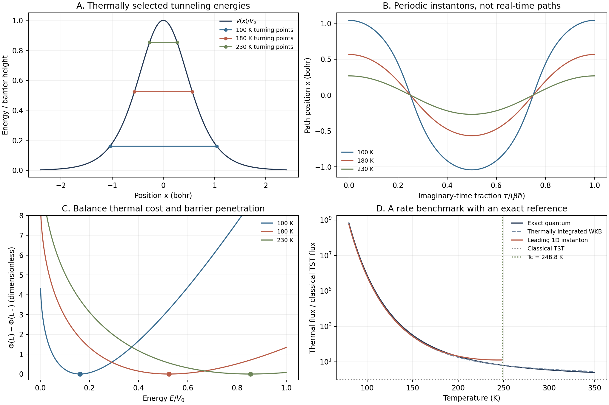

Chemical Reaction Computation - Part V
From Barrier Penetration to Imaginary-Time Instantons
A reaction can be rare for more than one reason. In the previous article, the difficulty was visiting the important configurations often enough to measure their equilibrium weight. But suppose we had solved that sampling problem. Would a classical trajectory through those configurations necessarily give the right reaction rate?
Part II already gave us a counterexample: for a one-dimensional barrier, exact quantum scattering and classical transition-state theory predict different rates on the same potential. We now revisit that barrier from another historical direction. Instead of solving the full quantum problem every time, can we identify a small set of paths that captures its most important contribution? This question leads from barrier penetration to instantons, and eventually to calculations involving rings of molecular configurations.
The ring is where several methods begin to look deceptively alike. Here we will derive a leading instanton approximation and test it, including a temperature range where it becomes unreliable. The next article will examine RPMD: a different use of the same ring-polymer representation.
1. From a forbidden region to a computational path
The semiclassical methods associated with Wentzel, Kramers, and Brillouin in the 1920s offered a bridge between waves and classical mechanics. A wave does not abruptly vanish where a classical particle would have insufficient energy. Its amplitude decays through that region, and a finite barrier can therefore transmit some incident probability. Kramers's 1926 work belongs to this early development; Eckart's 1930 barrier calculation supplies the analytically solvable model we will use below.
For chemistry, however, “there is some penetration” is only the beginning. Which energy contributes most at a given temperature? In many dimensions, which nuclear displacements participate? Must the important path follow the minimum-energy reaction path?
Miller's 1975 semiclassical reaction-rate theory for nonseparable systems was an important step toward treating this as a multidimensional problem. Much later, Richardson and Althorpe's 2009 work established a deep-tunneling connection between ring-polymer rate calculations and semiclassical instantons. A 2016 derivation by Richardson recovered instanton rate theory from quantum scattering, clarifying its foundation beyond the earlier imaginary-free-energy construction. These are selected landmarks, not a claim that the subject developed along only one line.
We can understand the central idea without starting with a many-dimensional path integral. First calculate transmission at a fixed energy; then ask which energies survive thermal averaging.
2. The first approximation: transmission through a barrier
Consider one nuclear coordinate \(x\), mass \(m\), and a smooth potential \(V(x)\). In a region where \(V(x)>E\), write the stationary wavefunction as \(\psi(x)=e^{-I(x)/\hbar}\). Substitution into the Schrödinger equation gives
At leading semiclassical order, neglect the second term relative to the first. The decaying branch has \(I'\simeq\sqrt{2m(V-E)}\). Integrating between the turning points \(x_-\) and \(x_+\), where \(V=E\), gives an amplitude attenuation. Squaring that amplitude gives the leading transmission probability:
The factor of two in \(W\) is important: this is the action appropriate to the transmission probability, and later to a complete imaginary-time round trip. Turning-point matching is needed to connect the local wave solutions; the expression above retains the leading deep-barrier result, not a uniformly accurate barrier-top formula.
Unlike the barrier height alone, this integral sees the width and shape of the barrier and the moving mass. At a fixed energy and fixed potential, replacing \(m\) by \(2m\) multiplies \(W\) by \(\sqrt2\). That already suggests strong isotope sensitivity, but it is not yet a thermal kinetic isotope effect: the contributing energies and reactant populations also need to be averaged.
3. Temperature selects a compromise, not just the lowest energy
Use a one-channel scattering model with equal asymptotic potentials on the two sides. Let \(Q_R\) be a consistently normalized reactant partition function. The thermal flux numerator \(\mathcal F=kQ_R\) is
The prefactor can be seen by putting incident states in a long interval of length \(L\). Their positive-momentum density is \(L\,dp/(2\pi\hbar)\), and their incident crossing frequency is \(v/L\). Multiplication cancels \(L\); since \(v\,dp=dE\), each energy interval supplies \(dE/(2\pi\hbar)\), weighted by its Boltzmann factor and transmission probability. Dividing by the reactant partition function converts this flux numerator to the chosen rate normalization.
Classical TST for this isolated one-dimensional barrier replaces \(P(E)\) by a step: zero below \(V_0\), one above. The integral is elementary:
Below the barrier, WKB instead makes the integrand \(e^{-\Phi(E)}\), where
The first term penalizes thermal excitation to high energy. The second penalizes penetration at low energy. If their sum has an interior minimum, the dominant energy \(E_*\) satisfies
This is the central compromise. The most important reacting particles need not sit at the bottom of the available energy range or reach the barrier top.
Expand the exponent to second order around its minimum and perform the resulting Gaussian integral:
This is the leading one-dimensional thermal instanton expression used in our example. It includes an energy-fluctuation prefactor, not only an exponential. The Gaussian extension beyond the physical integration interval is justified only when the important energy window is sufficiently localized away from its endpoints and the underlying transmission approximation is valid. Those conditions will matter in the results.
4. Why does the selected path live in imaginary time?
The condition \(-W'(E_*)=\beta\hbar\) has a mechanical interpretation. Real-time quantum evolution uses \(e^{-i\hat Ht/\hbar}\). On setting \(t=-i\tau\), it becomes \(e^{-\hat H\tau/\hbar}\); for \(\tau=\beta\hbar\), this is the Boltzmann operator \(e^{-\beta\hat H}\). Imaginary time is therefore connected directly to thermal quantum statistics, rather than being an arbitrary trick.
The corresponding path weight is \(e^{-S_E/\hbar}\), with Euclidean action
A dot now means differentiation with respect to \(\tau\). Vary the path while respecting its boundary conditions. Integration by parts gives
The force has the opposite sign from real classical dynamics. The stationary path behaves like classical motion in the inverted potential \(-V\). A barrier in \(V\) becomes a well in \(-V\), allowing a periodic orbit that travels between the two turning points and returns.
Its conserved quantity is \(m\dot x^2/2-V=-E\). Therefore the round-trip period is
The second line follows by differentiating the action integral; its endpoint terms vanish because the momentum is zero at the turning points. Our thermal saddle condition thus selects the orbit whose period is exactly \(\beta\hbar\).
Finally, along this orbit, \(m\dot x^2/2=V-E\). Split the Euclidean integrand as \(m\dot x^2+E\), integrate around the orbit, and obtain
The optimal energy in the transmission integral and the periodic imaginary-time path describe the same leading exponent. This is the useful content of the instanton picture. It does not mean that a nucleus literally crosses the barrier and comes back during the physical reaction, or that \(\beta\hbar\) is a measured reaction duration.
Nor does an equilibrium partition function, by itself, determine a rate. The reactive contribution and its flux normalization must be selected. Here the scattering integral supplies that selection explicitly; a general path-integral rate derivation must do the analogous work.
5. Why a ring polymer appears—and what it does not mean
To compute imaginary-time paths numerically, divide their duration into \(N\) intervals, \(\Delta\tau=\beta\hbar/N\). A symmetric short-time splitting of kinetic and potential operators gives the coordinate kernel
The first exponential is the free-particle imaginary-time propagator; the two potential factors come from the half steps on either side. Insert intermediate coordinates and multiply the kernels. A trace closes the endpoints, \(x_N=x_0\), producing
Adjacent coordinates are joined by quadratic terms, which look like springs. The last coordinate connects back to the first. That is the ring polymer: a discretized representation of one quantum coordinate, not \(N\) extra physical nuclei. For a bound or box-normalized system, the partition function converges to the quantum result as the discretization is refined.
Writing \(\beta_N=\beta/N\) and \(\omega_N=N/(\beta\hbar)\) makes the familiar classical-looking form explicit:
What we do with this representation distinguishes the methods:
| Approach | Computational object | What is obtained |
|---|---|---|
| Equilibrium path-integral sampling, including PIMD | An ensemble of ring configurations | Quantum equilibrium averages in the converged limit; sampling trajectories are not physical quantum dynamics. |
| Ring-polymer instanton | A reactive stationary imaginary-time path and fluctuations around it | A semiclassical rate or another specifically derived observable. |
| RPMD | Classical-like dynamics in an extended ring-polymer phase space | Approximate real-time correlation functions and rates. |
Finding a reactive instanton is not simply minimizing \(S_N\) over every possible ring: ordinary basin configurations also exist, and the reactive path has saddle structure. General implementations must handle its unstable direction and imaginary-time translation zero mode correctly. Our one-dimensional example uses an analytic orbit and its explicit energy prefactor; it is not a general ring-polymer saddle optimizer.
6. A barrier where the path and reference can both be checked
Return to the symmetric Eckart barrier from Part II. Use atomic units in the code, with \(\hbar=1\):
The barrier height is approximately \(6.28\ \mathrm{kcal\,mol^{-1}}\). This is a deliberately simple fixed potential, not a fitted molecular reaction or a solvent model. We retain \(\hbar\) in the derivation to make dimensions visible.
First obtain the periodic orbit. Set \(y=\sinh(ax)\) in the imaginary-time energy equation. It reduces to
This has a sinusoidal solution with amplitude \(\sqrt{V_0/E-1}\) and angular frequency \(a\sqrt{2E/m}\). Hence
Since \(W'=-\tau_{\mathrm{per}}\) and \(W(V_0)=0\), integration gives the action without a difficult turning-point integral:
Enforcing the thermal period yields the energy, Gaussian curvature, and path needed by the code:
There is a temperature restriction. Near the barrier top, \(V(x)\simeq V_0-\tfrac12m\omega_b^2x^2\). The imaginary-time equation becomes \(\ddot x=-\omega_b^2x\), whose small-amplitude period is \(2\pi/\omega_b\). Equating this to the thermal period gives the crossover temperature:
For this potential, a nontrivial subbarrier periodic orbit exists only for \(T<T_c\). As \(T\) approaches \(T_c\) from below, it shrinks toward the barrier top. This statement concerns the orbit and the ordinary thermal saddle approximation, not the disappearance of quantum transmission above \(T_c\). More complicated potentials can have richer orbit branches.
The independent reference is the known analytic Eckart scattering result. Define dimensionless parameters \(u\) and \(d\):
This expression is quoted from the analytic scattering solution, not derived by the WKB approximation. The displayed real-\(d\) form applies to our parameters. As a separate implementation check, the script integrates the stationary Schrödinger equation with an outgoing right boundary and extracts incident and reflected amplitudes on the left. It then integrates \(P_{\mathrm{exact}}\) thermally using the same flux formula as the approximations.
7. The calculation: what improves, and where does it fail?
The workflow is small enough to reproduce in one script. Evaluate exact transmission; integrate it over thermal energies; repeat with leading WKB below \(V_0\) and unit transmission above; evaluate the Gaussian instanton expression for \(T<T_c\); finally sample the analytic orbit with successively more beads to test the discretized action. The elementary WKB curve includes the overbarrier integral, whereas the displayed instanton formula is the subbarrier saddle contribution, with no extra TST term added.
We report ratios of \(\mathcal F=kQ_R\). With the same \(Q_R\), these equal rate ratios. We deliberately do not attach molecular \(\mathrm{s^{-1}}\) units to an unnormalized scattering numerator or imply that this open barrier has a chemically specified reactant basin.

| \(T\) (K) | Exact / TST | WKB / exact | Instanton / exact |
|---|---|---|---|
| 100 | \(7.81\times10^5\) | 0.824 | 0.824 |
| 150 | 323.69 | 0.834 | 0.838 |
| 180 | 44.94 | 0.868 | 0.914 |
| 200 | 19.88 | 0.904 | 1.045 |
| 230 | 8.90 | 0.965 | 1.475 |
| 240 | 7.33 | 0.985 | 1.721 |
| 250 | 6.19 | 1.003 | Not applicable |
| 300 | 3.46 | 1.081 | Not applicable |
At 100 K, the leading instanton captures a rate enhancement of hundreds of thousands relative to classical TST, but still underestimates the exact result by about 18%. Its agreement with thermally integrated WKB shows that the Gaussian energy integration adds little error there: the leading semiclassical transmission remains approximate. Capturing the dominant exponential is a major improvement, not a claim of exactness.
At 240 K, the instanton overestimates the exact rate by about 72%. The selected energy has moved close to the upper endpoint \(V_0\), where extending a Gaussian across the endpoint is unsafe and leading deep-barrier WKB is no longer reliable. For this model the formula is finite at crossover, but inaccurate; one should not describe every crossover failure as a literal divergence. The smaller error at 200 K can partly reflect cancellation between approximations, rather than uniform improvement.
At 250 K, just above \(T_c\), the exact flux is still 6.19 times TST. “No subbarrier periodic saddle of this form” plainly does not mean “no quantum correction.” More uniform theories address this regime; Richardson's 2016 analysis and microcanonical-to-thermal construction explicitly investigates the limitations of standard thermal instanton theory. Our elementary thermally integrated WKB curve is not an implementation of that improved theory.
Numerical checks separate these approximation errors from discretization errors. At five energies from 0.001 to 0.014 hartree, direct Schrödinger integration with tightened tolerance agrees with analytic transmission to better than \(10^{-8}\) relative error. The coarser integration conserves reflected plus transmitted flux to better than \(2\times10^{-10}\). Tightening thermal quadrature also changes the displayed ratios by less than \(10^{-8}\) relative. These are checks at the stated test points, not a proof about every possible parameter.
For the 100 K orbit, the continuum action is \(S_E/\hbar=20.28261065\). Sampling it with 32, 128, and 1024 beads gives 20.24372135, 20.28015739, and 20.28257229. The action error decreases approximately as \(N^{-2}\), while the discrete equation-of-motion residual also decreases. The script samples an analytic path; this tests the ring discretization, not an optimization algorithm. Increasing bead count cannot remove the roughly 18% physical approximation error in the leading instanton rate.
8. What this exploration makes possible
In one dimension, solving a scattering equation is inexpensive. The motivation for instanton methods becomes stronger when the reacting object is a whole molecule: following the full quantum wavefunction through all nuclear coordinates rapidly becomes demanding. A stationary reactive path and fluctuations around it can provide a much more compact semiclassical calculation.
For coordinates \(\mathbf q\), the action generalizes by replacing \(m\dot x^2/2\) with \(\sum_i m_i\dot q_i^2/2\). The same variation gives one imaginary-time equation for each coordinate. The important path balances potential energy against mass-weighted displacement. It is therefore not required to follow the minimum-energy path. This opens a way to investigate collective atomic motion and paths that cut across the bends of an ordinary reaction coordinate.
A practical multidimensional calculation needs more than drawing that path: an adequate potential surface, a converged reactive saddle, fluctuation prefactors, reactant partition functions, and appropriate treatment of competing paths and environmental coordinates. A leading harmonic fluctuation treatment may be insufficient. Standard single-surface instanton theory also does not automatically solve the multielectronic-state problem from Part III.
The experimental target remains a rate, its temperature dependence, or an isotope effect—not the bead arrangement itself. For isotopes on the same Born–Oppenheimer surface, both the optimal path and statistical factors can change. A measured isotope effect is thus not obtained by inserting a new mass into one fixed action and ignoring everything else. Similarly, a thermal reaction rate and a tunneling splitting in a bound double well are different observables, even though both admit instanton treatments.
The main advance is a change in what we try to compute: from the entire quantum motion to a dominant contribution selected by thermal statistics and barrier penetration. The benchmark also sets the boundary of that change. A well-converged path is not necessarily an accurate rate, and an accurate rate for an Eckart barrier is not yet validation of a molecular mechanism.
Next we will ask what happens if we propagate the ring polymer instead of finding a stationary reactive path. That is the entry point to RPMD rate theory, its dynamical correction, and a new comparison with exact results. The common ring representation explains the family resemblance; it does not make RPMD and instanton theory interchangeable.
Reproduce and inspect
- Standalone Python script: transmission, thermal integrals, instanton paths, checks, and plots.
- Thermal fluxes and ratios; imaginary-time paths.
- Bead-number action and residual checks; independent scattering and action checks; thermal quadrature checks.
python assets/code/reaction-dynamics/eckart_instanton.pyRequires NumPy, SciPy, and Matplotlib. All model parameters are fixed in the script, calculations are deterministic, and output consists only of compact CSV files and figures. Flux values use atomic units; rate ratios are dimensionless. An inapplicable instanton value is stored as NaN, not zero. This calculation neither runs RPMD nor optimizes a multidimensional ring-polymer instanton.
Historical sources
- Kramers, “Wellenmechanik und halbzahlige Quantisierung,” Z. Phys. 39, 828–840 (1926), listed in the Leiden publication archive.
- Eckart, “The Penetration of a Potential Barrier by Electrons,” Phys. Rev. 35, 1303–1309 (1930).
- Miller, “Semiclassical Limit of Quantum Mechanical Transition State Theory for Nonseparable Systems,” J. Chem. Phys. 62, 1899–1906 (1975).
- Richardson and Althorpe, “Ring-Polymer Molecular Dynamics Rate-Theory in the Deep-Tunneling Regime: Connection with Semiclassical Instanton Theory,” J. Chem. Phys. 131, 214106 (2009).
- Richardson, “Derivation of Instanton Rate Theory from First Principles,” J. Chem. Phys. 144, 114106 (2016).
- Richardson, “Microcanonical and Thermal Instanton Rate Theory for Chemical Reactions at All Temperatures,” Faraday Discuss. 195, 49–67 (2016).